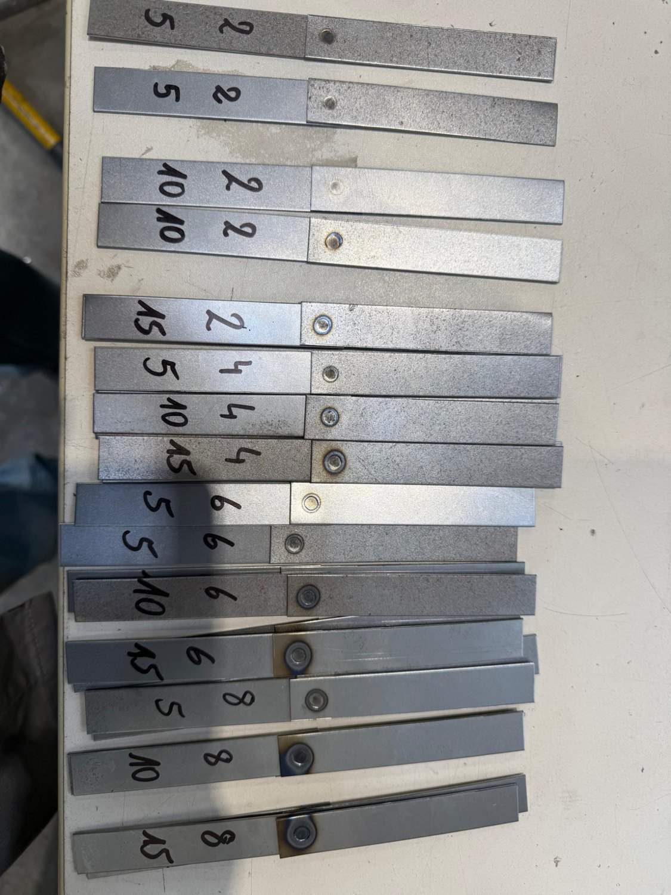
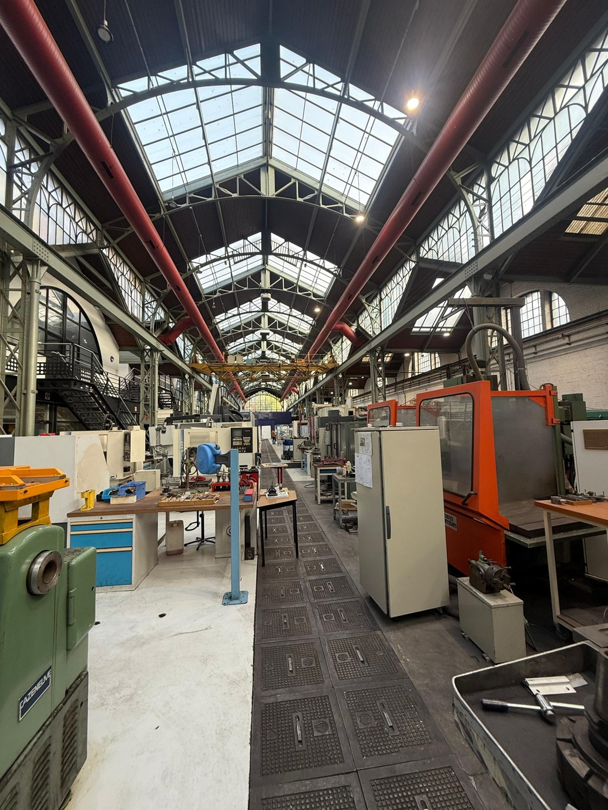

FABRICATION LAB · ARTS ET MÉTIERS · 2024
Travaux pratiques - soudage par points, rivetage et collage
Étude des procédés d’assemblage, de la préparation d’éprouvettes, des essais de traction et des observations métallographiques en atelier.
Joining ProcessesMaterialsMechanical TestingFabrication

PRÉSENTATION DU PROJET
Assemblage et comportement mécanique des matériaux
Le compte rendu présente les principes du soudage par résistance, les paramètres de procédé et les essais de traction sur assemblages à un ou deux points.
Les travaux sur le rivetage étudient le dimensionnement et la disposition des rivets selon la direction du chargement.
Les essais de collage comparent la préparation des surfaces, les conditions de polymérisation et les comportements à la rupture.
Le rapport présenté est un document pédagogique fourni à titre d’illustration : il ne porte pas le nom de Martín parmi les auteurs.
